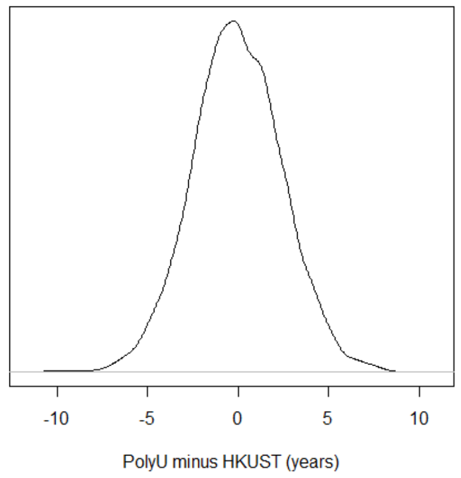
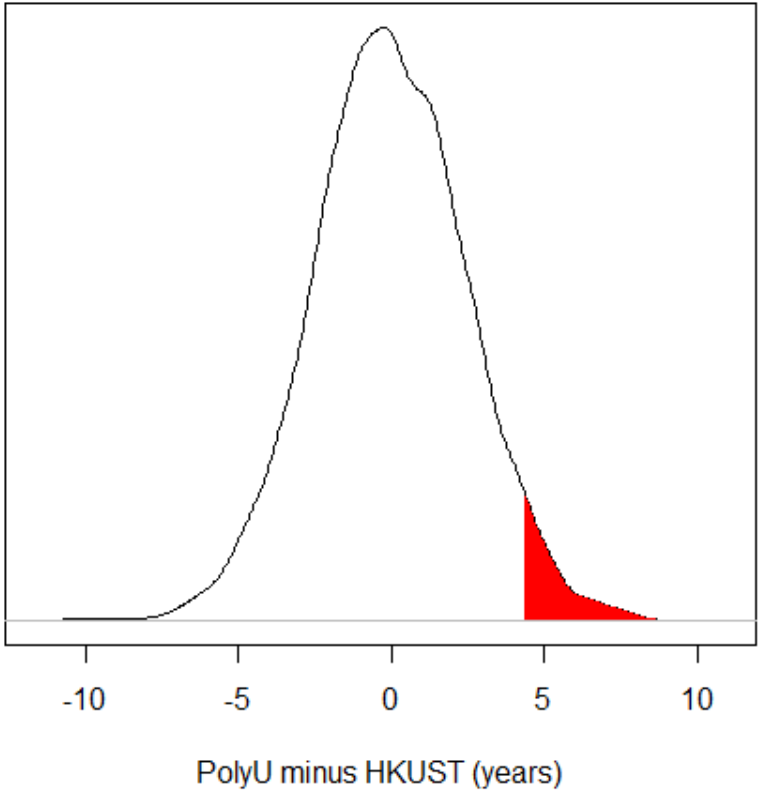

When we do research, typically we are interested in some population. E.g., in a study
of whether a certain kind of learning method is more effective than another kind of learning method, the population might be all
people in the world, all people of a certain age, all people of a certain age in Hong Kong, etc.; it depends what group we want to
be able to make conclusions about.
Usually it is not possible to collect data from the entire population. For example, if we want to test whether primary school students
learn better through flipped classrooms or traditional classrooms, the population we are interested in is "all primary school
students", but we probably do not have enough time or money to test every primary school student in the world (and it is impossible
to test past and future primary school students). Or if we want to test whether the brain processes nouns differently than it
processes verbs in Chinese, the population we are interested in is "all nouns and verbs in Chinese, and all people's brains", but we
probably do not have enough time to do brain recordings as every person reads every noun and verb in the whole language.
Therefore, in research we usually only collect data from a sample. For example,
instead of testing flipped and traditional classrooms among all primary school students in the world, maybe we just test it among 50
students at a local school where it's convenient for us to do the test.
Consider the example data below. Let's imagine I want to know if PolyU graduate students are older than HKUST graduate students. The
population I am interested in, therefore, is all PolyU graduate students and all HKUST graduate students. But I don't have access to
the personal records, so I can't look up all their ages; instead, I just go to each school and ask random people around campus. I
don't have time to ask every graduate student at each school, so maybe I just decide to ask 10 at each school. Here are my results
(these are fake data):
- PolyU: 25, 24, 23, 31, 33, 25, 26, 28, 44, 30
- HKUST: 17, 35, 23, 25, 27, 24, 25, 25, 21, 24
If I want to know if my PolyU students are older than my HKUST students, all I need is some basic math. The average age of the PolyU
students I asked is 29, and the average age of the HKUST students is 25. So my group of PolyU students is 4 years older, on average,
than my group of HKUST students.
However, this is only a statement about my sample. What I really want to know is whether the population of PolyU
students tends to be older than the population of HKUST. This random sample I got might not reflect the population well. For
example, maybe PolyU students are actually younger on average, but I just happened to have bad luck and I randomly bumped into the
oldest students at PolyU, or randomly bumped into the youngest students at HKUST.
The bad news is, what I want to know is impossible. There is no way to know what the situation is in the population, unless I am
actually able to measure the whole population. (In this case it might actually be possible, since the university might have records
of all its students; someone with the right computer access might be able to get all that data. But in normal research contexts, it
is usually not possible to know what the result looks like for the entire population.)
Is there a risk that the random sample I got does not match the population? In reality, we usually don't know. But in this case, I made
up fake data, so we can figure it out. This Excel sheet has the ages of 500 fake PolyU students and the
ages of 500 fake HKUST students. Let's imagine, for the sake of this lesson, that that is all the students at each school.
In other words, we have data from the entire population. Look at the data and calculate the average age of each group. (You should
find an average age of 27 for the PolyU students, and an average age of 25 for the HKUST students; i.e., PolyU students are 2 years
older than HKUST students, on average.) In this case, since I made up the data for the whole population, we know what the "right"
answer is. Any time we choose a random sample of 10 PolyU students and 10 HKUST students, we should expect to find that the PolyU
students are older; that is the "correct" answer (in that it matches what we know to be true in the population). But, as I mentioned
above, there is a chance that maybe if we have bad luck, we might randomly get a sample that gives us the "wrong" answer (i.e., a
sample where the PolyU students are younger).
You can try this for yourself. Randomly select 10 PolyU students and 10 HKUST students and compare their averages. Were the
PolyU students older (the "correct" answer) or younger (the "wrong" answer)? Keep trying this again and again until you randomly get
a sample with a "wrong" answer. How many tries did it take you?
(In the exercise described above, I got a wrong answer on my second try! Then I also tried taking random samples like
this 500 times [using a computer program] and 92 of those samples [18%] got the "wrong" answer.)
So, we understand that it is possible for a sample to be "wrong" (i.e., to be inconsistent with the pattern in the
population). So after we do a study, we can calculate what the result is in the sample, but we don't know if this
result is a "right" one or a "wrong" one. In my fake example here, we know what the "right" result is because we know
what the data for the whole population looks like; in reality, you usually do not know that (if you did, you wouldn't
need to do the research). How can we figure out if our sample's result was consistent or inconsistent with the
population?
The short answer is: we cannot. Research is never certain. This is the difference between math and statistics. Math is
the science of certainty (it's all about absolute proofs); statistics is the science of uncertainty. Statistics never
gives you an answer; all it does is help you quantify how uncertain you are about something. This is one of the
reasons we usually don't say a research result "proves" something.
So what can we do? The best solution is replication. If we do one study (e.g., collect one sample of 10 PolyU students
and 10 HKUST students) then we have little idea whether that result matches the population or not. But if we repeat
this study twenty times (each time getting a new sample of 10 PolyU students and 10 HKUST students), we can have a
better idea. If we do the study twenty times and eighteen of them show that the sample of PolyU students is older
than that sample of HKUST students, we can be fairly confident that PolyU students are probably older than HKUST
students in the population.
It's often not feasible to replicate the same study many times, though. Think about how much effort it takes you to do
one study for your dissertation; do you really want to do it twenty times? This is sometimes possible in more
controlled disciplines like physics. But in social sciences, where we often have to struggle to get people to join
an experiment, it might be hard to do. And you might prefer to move on to new research rather than repeating the same
experiment twenty times.
The next best solution is to use large samples. The larger your sample, the more likely it is to match the pattern that
is present in the population. At the most extreme: if your sample is the entire population, then it is guaranteed to
match the population.
Let's see if our results get more accurate (i.e., more likely to match the pattern that exists in the overall
population) when we use a bigger sample. Remember how earlier we tried taking samples of 10 students from each
university, and I said that 18% of those samples got "wrong" results, and I didn't need to try many samples before I
got a "wrong" results? Try doing that exercise again, but this time use samples of 30 students from
each university. Is it harder to get a wrong result? How many tries did you have to make before you got a wrong
result (or got tired and gave up—it's ok to give up if you get frustrated)?
(I just tried it 500 times again, and this time only 7% of those samples got wrong results. I suspect that you also
will have found that it took much longer to get a wrong result this time, i.e., many more of your samples had right
results.)
So, the best things to do for research are to replicate studies and to use large samples. But sometimes this is not
enough; we may not have time to run many replications or run a sufficiently large sample. In this case, we still want
to have some idea of how much we should trust our result. This is what people typically use p-values for.
Remember that above I randomly selected 10 PolyU students and 10 HKUST students and found that, on average, the PolyU
students were 4 years older (actually 4.3 years older, to be exact) than the HKUST students. If I only collected that
sample and I did not have access to the data from the whole population, I would have no way of knowing if this result
matches the population (i.e., PolyU students really are older than HKUST students, on average) or if this result does
not match the population (i.e., PolyU students are not older than HKUST students on average).
People often try to help deal with this question using a p-value. p-values are weird things. A
p-value tells us how likely we would have been to find such a big difference (i.e., PolyU students being 4.3
years older, or more, than HKUST students) if there were really no difference in the population.
In other words, imagine that there is really no overall difference between PolyU and HKUST students in the population.
There may be some variation (PolyU has some older students and some younger students, and so does HKUST), but the
averages are equal. If that were the case, then every time we take a random sample of 10 PolyU and 10 HKUST students,
there would still be a chance that the PolyU student sample is older, just because we might have randomly picked
relatively old PolyU students and relatively young HKUST students.
Let's see an example. I have done a computer simulation by creating new fake populations of PolyU and HKUST students,
and this time I made them so that they have the same average age. Then, I randomly took 10 PolyU students and 10
HKUST students and compared their ages. I repeated this 5,000 times. I've shown the results in the graph below. For
any given PolyU-minus-HKUST difference (shown along the horizontal axis), the height of the curve above that spot
indicates how many tests showed a difference of that amount. In other words, in most of my samples, the difference
between PolyU and HKUST is near zero (that's where the curve is highest). This is what we should expect, since in
reality these two populations really do have the same average age. But sometimes, because of bad luck, we happen to
pick 10 pretty old PolyU students and 10 pretty young HKUST students. So you can see that in some of my samples,
PolyU students are more than 5 years older on average than HKUST students, or as much as 10 years younger. These
samples are not as common (you can see that the curve is pretty low near those edges) but they can still happen.

But what about my "real" experiment, where the PolyU students were 4 years older than HKUST students? If there were
really no difference between PolyU and HKUST students in the population, would it have been easy to get a difference
this big in our sample? In the graph below, I have shaded in the part of the distribution that represents the samples
where PolyU students were 4.3 years (or more) older than HKUST students.

In this example, that area corresponds to 4% of the distribution. In other words, I took 5000 samples, and 4% of those
samples got a PolyU-HKUST difference of 4.3 years or more.
This number, 4%, is a p-value (although it's usually expressed as a proportion [.04] rather than a percentage
[4%]). What it means is: if there were actually no difference in the population, then there is still a 4% chance that
I would have found a result as big (or bigger) than what I found in my real experiment.
Be very careful interpreting what this means. People often want to say that a p-value is the likelihood that
your result was wrong (i.e., the likelihood that your result does not match the population, or that your result was
"due to random chance"). This is INCORRECT. A p-value tells how likely you
would have been to get this result if there was no difference in the population. It does not tell you how likely it
is that there was no difference in the population if you got this result. The likelihood of X, given Y, is not the
same as the likelihood of Y, given X. For example, if you know something is a dog, then you know that it's a mammal
(there is a 100% that it is a mammal). But if you know something is a mammal, you don't necessarily know that it's a
dog. Saying "if I know this animal is a mammal, then there's a 5% chance that it's a dog" is not the same as saying
"if I know this animal is a dog, then there's a 5% chance that it's a mammal". Likewise, saying "if there were no
difference in the population, there's a 4% chance that I could have gotten this result" is not the same as saying
"if I got this result, there's a 4% chance that there's no difference in the population". A p-value only
supports the first statement, not the second.
This is a serious problem. Usually we are interested in taking our data and making a conclusion about the population.
But p-values cannot do that. p-values take an assumption about the population (i.e., what the
population would look like if there were no difference between groups) and make a conclusion about your data (i.e.,
if there were no difference between groups, it would be hard to get a sample of data like this).
The logic people use with p-values is usually something like the following: "if there were no difference
between PolyU and HKUST in the population, then there's not a good chance that my samples would have a 4.3-year age
difference. So I prefer to conclude that there is a difference between PolyU and HKUST." This logic, however, is
also problematic. Showing that one situation (getting a difference of 4.3 years in this sample when there was no difference in the population) is unlikely does not necessarily
prove that another situation (there really being a difference of 4.3 years in the population) is likely. Maybe the new
conclusion you make is even less likely than the other one. For example: we know that if a given person is Chinese,
it is not very likely that that person is Ai Weiwei (there are over a billion Chinese people, and only one Ai
Weiwei, so the chance that a random Chinese person is Ai Weiwei is less than one in a billion!). Now imagine we see a
random person on the street, and that person is Ai Weiwei. As we said before, if we pick any random Chinese person,
it's not likely that the person is Ai Weiwei. So should we conclude that this person we just saw is not Chinese? No!
Likewise, even if we can say "if there were no population difference between PolyU and HKUST, there it's unlikely
there would be a 4.3-year age difference in my sample", that does not necessarily give us license to conclude "then
there is probably a 4.3-year age difference in the population".
Are you feeling confused yet? If so, good! p-values are confusing. If you use them, you should appreciate how
weird and confusing they are, and think carefully about what conclusions you make about p-values, rather
than being overconfident about what you can say based on a p-value. People who make strong and confident
claims based on their research's p-value are often people who don't actually understand what
p-values mean.
So, overall, p-values have a lot of problems. And the ways that most people interpret p-values are
incorrect. If you use p-values, be very careful what you say about them.
Nevertheless, in your research career you will probably need to use p-values sometimes. Many people who have
power over your future (e.g., your professors, and the reviewers of papers that you write) often ask you to show
p-values. Therefore, you have to know ways to calculate them. The latter part of this module (and several
other modules in this Data Analysis section) will cover some ways to do that. First, try to list some tests that
you have heard of that can help with calculating p-values. (No need to look anything up for this
question; I just want you to brainstorm what you know off the top of your head. If you don't know of any tests,
that's ok, you can just say that.)